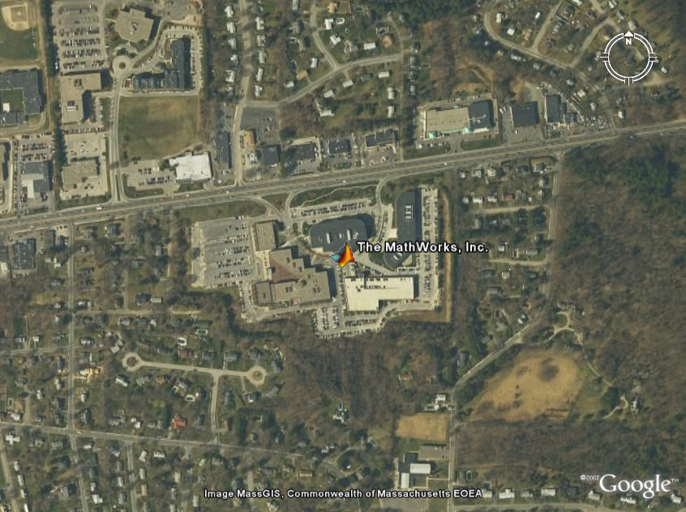
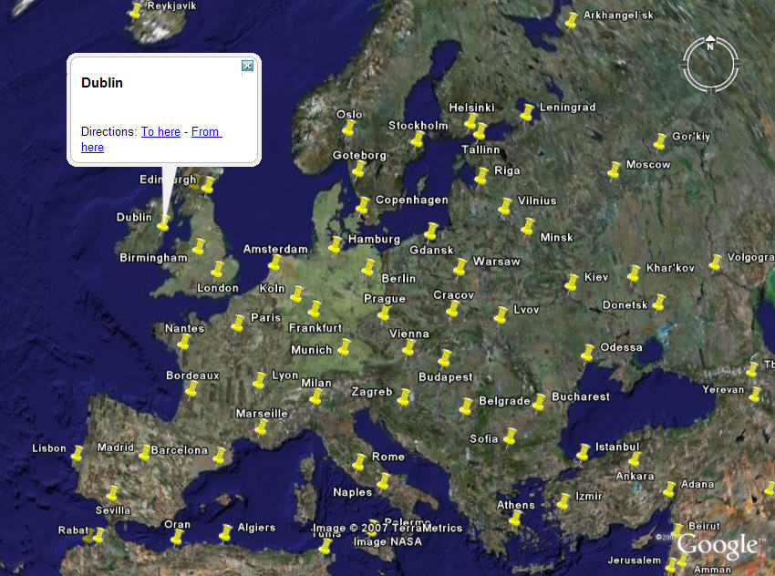
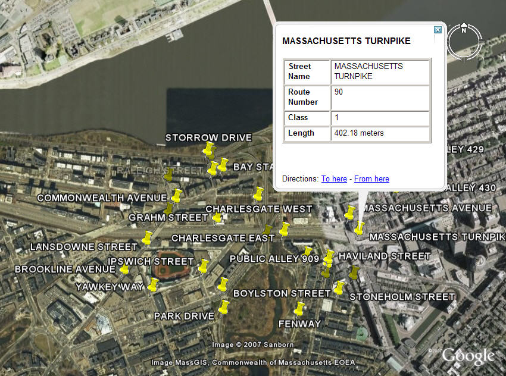
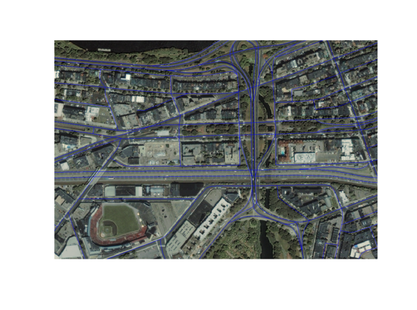
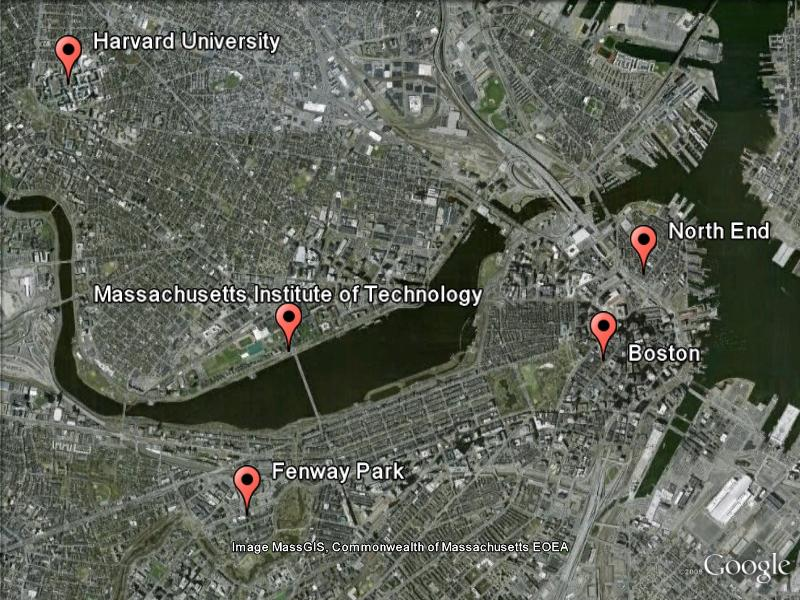

Exporting Vector Point Data to KML
This demo shows ways to structure vector point data and export it to the KML format. KML is an XML dialect used by Google® Earth and Google® Maps browsers.
Contents
Define an Output Directory for the KML Files
This demo creates several KML files and uses the variable kmlDirectory to denote their location. The value used here is determined by the output of the tempdir command, but you could easily customize this.
kmlDirectory = tempdir;
Example 1: Write a Single Point to a KML File as a Placemark
The placemark will include an icon and a description with HTML markup.
Assign the latitude and longitude coordinates for the point.
lat = 42.299827; lon = -71.350273;
Create a description for the placemark. Include HTML tags in the description to add new lines for the address.
description = sprintf('%s<br>%s</br><br>%s</br>', ... '3 Apple Hill Drive', 'Natick, MA. 01760', ... 'http://www.mathworks.com');
Assign iconFilename to a GIF file on the local system's network.
iconDir = fullfile(matlabroot,'toolbox','matlab','icons'); iconFilename = fullfile(iconDir, 'matlabicon.gif');
Assign the name for the placemark.
name = 'The MathWorks, Inc.';
Write the data to the KML file.
filename = fullfile(kmlDirectory, 'MathWorks.kml'); kmlwrite(filename, lat, lon, ... 'Description', description, ... 'Name', name, ... 'Icon', iconFilename);
A KML file can be displayed in a Google Earth browser. Google Earth must be installed on the system. On Windows® platforms display the KML file with:
winopen(filename)
For Unix and MAC users, display the KML file with:
cmd = 'googleearth '; fullfilename = fullfile(pwd, filename); system([cmd fullfilename])
For this demo, the KML file was previously displayed using Google Earth Pro. The Google Earth image was then saved using the Google Earth "File->Save Image" menu. This is how the data in your KML file looks when loaded into Google Earth:

Optionally, remove the new KML file from your KML output directory. (This demo needs to clean up after itself; in a real application you would probably want to omit this step.)
delete(filename)
Example 2: Write a Point Geostruct to a KML File
Write the locations of major European cities to a KML file, including the names of the cities, and remove the default description table.
Assign the latitude, longitude bounding box.
latlim = [ 30; 75]; lonlim = [-25; 45];
Read the data from the worldcities shapefile.
cities = shaperead('worldcities.shp','UseGeoCoords', true, ... 'BoundingBox', [lonlim, latlim]);
Write the cities geostruct to a KML file. Assign the name of the placemark to the name of the city. Remove the default description since the geostruct has only one attribute.
filename = fullfile(kmlDirectory, 'European_Cities.kml'); kmlwrite(filename, cities, 'Name', {cities.Name}, 'Description',{});
This is how the data in your KML file looks when loaded into Google Earth:

Optionally, remove the new KML file from your KML output directory.
delete(filename)
Example 3: Write a Point Geostruct to a KML File with a Modified Attribute Table
This example displays a placemark at the location of each road segment for an area surrounding Fenway Park in Boston Massachusetts.
Assign a latitude and longitude bounding box.
latlim = [ 42.345589; 42.351322]; lonlim = [-71.099452; -71.08797];
The projection in the GeoTIFF file is in units of survey feet. The point coordinates in the shapefile are in meters. We need to project the bounding box points to units of meters. We can do this by converting the GeoTIFF projection structure to a standard mstruct.
proj = geotiffinfo('boston.tif');
mstruct = geotiff2mstruct(proj);
[x,y] = mfwdtran(mstruct, latlim, lonlim);
Read the road data from the shapefile.
roads = shaperead('boston_roads.shp', 'BoundingBox', [x, y]);
Convert the geometry from 'Line' to 'Point' resulting in a point geostruct with one point associated with each unique street name.
[roads.Geometry] = deal('Point');
Project the points to latitude and longitude coordinates for KML.
[roads.Lat] = deal([]); [roads.Lon] = deal([]); for k=1:numel(roads) [roads(k).Lat, roads(k).Lon] = ... minvtran(mstruct, roads(k).X(1), roads(k).Y(1)); end
Construct an attribute specification.
attribspec = makeattribspec(roads);
Modify the attribute spec to:
- eliminate the 'ADMIN_TYPE' attribute,
- rename the 'STREETNAME' field to 'Street Name',
- rename the 'RT_NUMBER' field to 'Route Number',
- rename all other fields with first letter upper case only,
- highlight each attribute label with a bold font,
- reduce the number of decimal places used to display road lengths,
- add to the format specifier our independent knowledge that the length units are meters.
attribspec = rmfield(attribspec,'ADMIN_TYPE'); attribspec.STREETNAME.AttributeLabel = '<b>Street Name</b>'; attribspec.RT_NUMBER.AttributeLabel = '<b>Route Number</b>'; attribspec.CLASS.AttributeLabel = '<b>Class</b>'; attribspec.LENGTH.AttributeLabel = '<b>Length</b>'; attribspec.LENGTH.Format = '%.2f meters';
Only write out roads with unique street names to KML.
[U, i] = unique({roads.STREETNAME});
uniqueRoads = roads(i);
Export the road network to a KML file.
filename = fullfile(kmlDirectory, 'Boston_Roads.kml'); kmlwrite(filename, uniqueRoads, ... 'Description', attribspec, 'Name', {uniqueRoads.STREETNAME})
This is how the data in your KML file looks when loaded into Google Earth:

Compare the Google Earth image with the Boston GeoTIFF image, overlayed with the roads.
Convert the bounding box limits of the roads from meters to survey feet in order to set axes limits.
surveyFeetPerMeter = unitsratio('sf', 'meter'); xLim = surveyFeetPerMeter * x; yLim = surveyFeetPerMeter * y;
Convert the road coordinates from meters to survey feet in order to overlay the lines on the image.
roadsX = surveyFeetPerMeter*[roads.X]; roadsY = surveyFeetPerMeter*[roads.Y];
Display the Boston GeoTIFF image and overlay the roads on top of the image. The Boston GeoTIFF image includes material (c) GeoEye™, all rights reserved.
figure('Position',[1 1 1600 1040]); mapshow('boston.tif'); set(gca,'xlim',xLim, 'YLim', yLim) mapshow(roadsX, roadsY); axis off
Optionally, remove the new KML file from your KML output directory.
delete(filename)
Example 4: Write Address Data to a KML File
Create a cell array containing names of several places of interest in the Boston area.
names = {'Boston', ...
'Massachusetts Institute of Technology', ...
'Harvard University', ...
'Fenway Park', ...
'North End'};
Create a cell array containing addresses for the places of interest in the Boston area.
addresses = { ...
'Boston, MA', ...
'77 Massachusetts Ave, Cambridge, MA', ...
'Harvard University, Cambridge MA', ...
'4 Yawkey Way, Boston, MA', ...
'134 Salem St, Boston, MA'};
Use a Google Maps icon for each of the placemarks.
icon = 'http://maps.google.com/mapfiles/kml/paddle/red-circle.png';
Write the data to the KML file.
filename = fullfile(kmlDirectory, 'Places_Of_Interest.kml'); kmlwrite(filename, addresses, ... 'Name', names, ... 'Icon', icon, ... 'IconScale', 1.5);
This is how the data in your KML file looks when loaded into Google Earth:

Optionally, remove the new KML file from your KML output directory.
delete(filename)
Credits
boston_roads.shp
Office of Geographic and Environmental Information (MassGIS), Commonwealth of Massachusetts Executive Office of Environmental Affairs http://www.state.ma.us/mgis
boston.tif
Copyright GeoEye Includes material copyrighted by GeoEye, all rights reserved. For more information, please call 1.703.480.7539 or visit http://www.geoeye.com
For more information, run:
>> type boston.txt
Google Earth Images
The Google Earth images were acquired using Google Earth Pro. For more information about Google Earth and Google Earth Pro, visit http://earth.google.com/